KARTÓDROMO INTERNACIONAL DE BETIM · APP DA OPERAÇÃO
Kart no app
da operação
Passo a passo com as telas reais do app Operação no tablet: achar o kart que chegou da cronometragem, conferir o chassi, mandar para a oficina, abrir e fechar a ordem de serviço com o mecânico e liberar o kart para o sorteio.
Anderson · Johnny · DoidimOs três mecânicos da casa. O app e o servidor só aceitam esses nomes.
1 a 99 / 100+Número do kart: 1 a 99 é Light, 100 em diante é Super.
Chassi livreVem da cronometragem e pode ser trocado no app. Não define a frota.
A. Entrar e abrir a Frota
B. Card de teste: o kart subiu?
C. Ficha do kart e chassi
D. Tirar o kart de operação
E. Ordem de serviço (mecânico)
F. Concluir a oficina
G. Abertura do dia: liberar o kart
H. Problemas comuns
Telas tiradas do app ligado ao servidor de produção do kartódromo em 17/11/2026, durante um teste real com o kart de teste 98 (chassi CARD-TESTE). Versão do app: 1.3.2.
A. Entrar e abrir a Frota
1Entrar com seu usuário
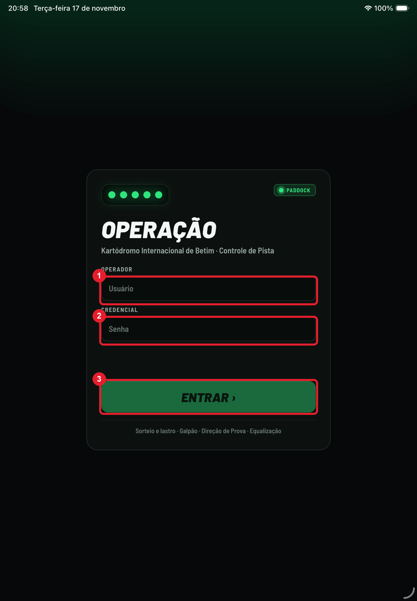
1 · OperadorSeu usuário (o mesmo de sempre).
2 · CredencialSua senha.
3 · EntrarToque em ENTRAR ›.
SairBotão Sair no canto de cima da tela inicial. Sai na hora, mesmo com a internet ruim.
2Na tela inicial, tocar em Frota
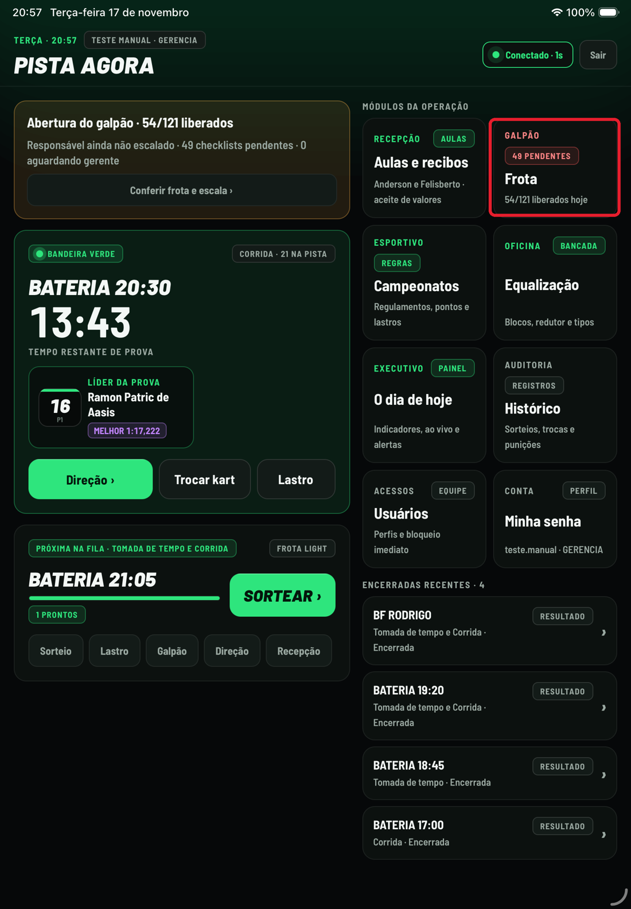
Onde tocarCard GALPÃO · Frota, à direita, no alto.
O que abreA tela Frota do galpão, com todos os karts.
ConectadoO selo verde Conectado no alto mostra que o app está falando com o servidor.
B. Card de teste: o kart subiu?
3Conferir se o kart cadastrado na cronometragem apareceu
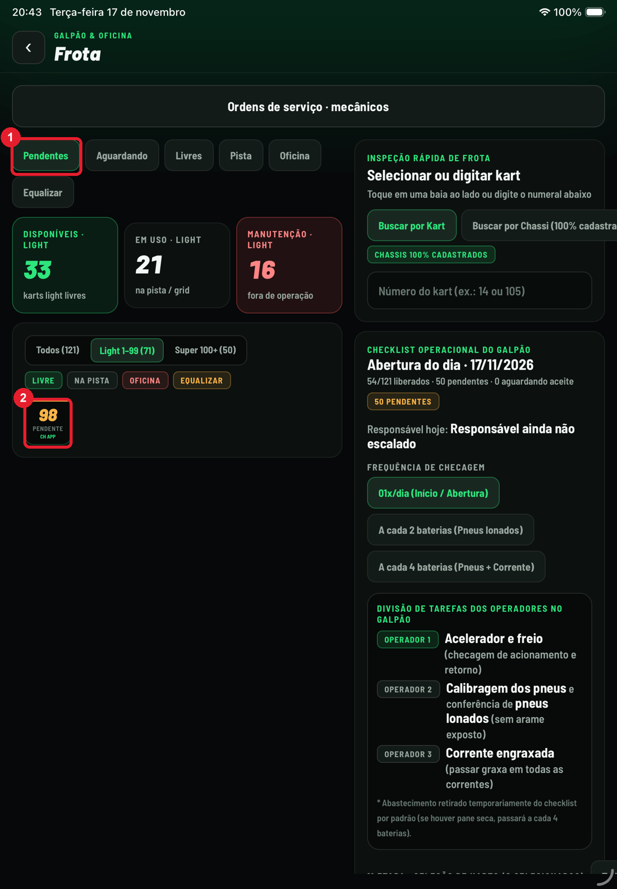
1 · Aba PendentesKart que acabou de chegar aparece aqui (ainda não liberado hoje).
2 · Card do kartNo teste, o kart 98 foi cadastrado no programa da cronometragem e o card apareceu no app na mesma hora.
Card de teste fixoO kart 98 (chassi CARD-TESTE) ficou na aba Oficina para vocês conferirem no tablet. Ele não entra em sorteio. Para tirar, exclua o transponder 9990001 no programa da cronometragem.
Se o kart não aparecer: confira o cadastro na cronometragem (Cadastros › Kart: transponder e chassi) e veja se o selo Conectado está verde.
C. Ficha do kart e chassi
4Tocar no kart para abrir a ficha
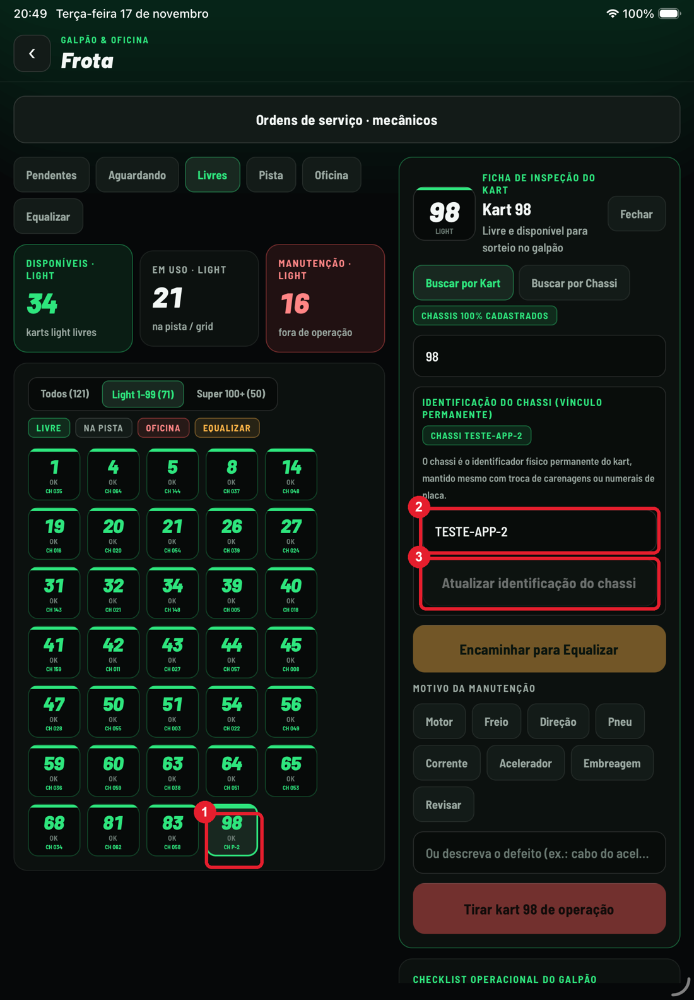
1 · Card do kartToque no número. A Ficha de inspeção do kart abre à direita.
2 · ChassiJá vem preenchido com o chassi da cronometragem.
3 · Trocar chassiDigite o chassi novo e toque em Atualizar identificação do chassi. A troca vai também para a cronometragem.
5Confirmação
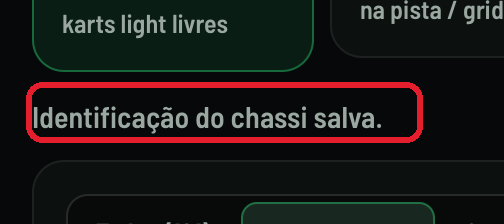
Aparece “Identificação do chassi salva.” Se esse chassi estava em outro kart, ele sai de lá (troca de placa e sensor).
D. Tirar o kart de operação
6Escolher o defeito e tocar em Tirar kart de operação
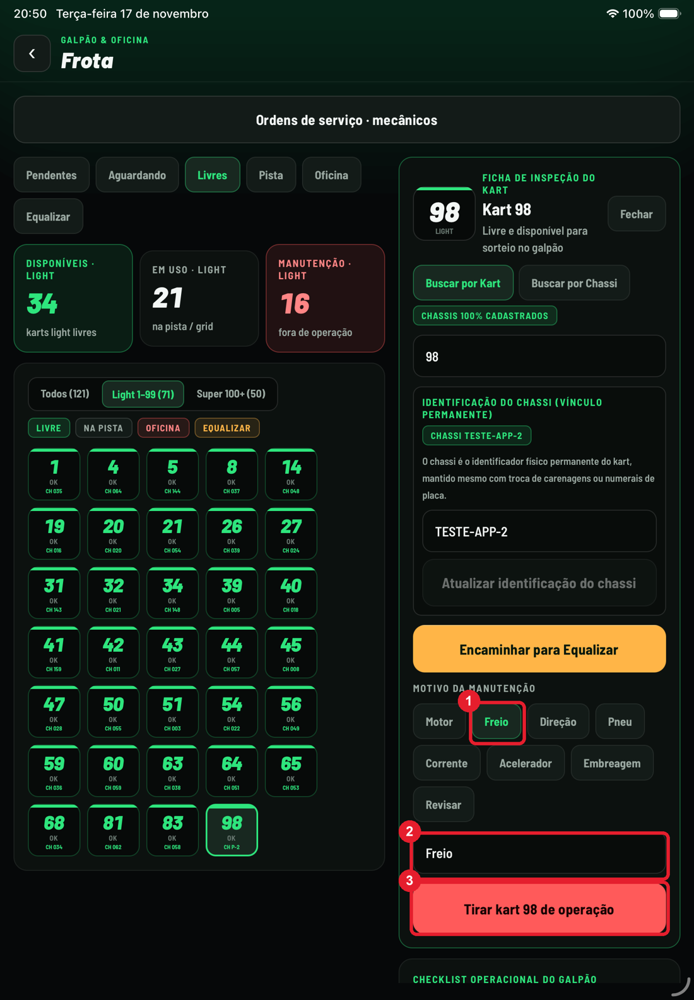
1 · MotivoToque no defeito: Motor, Freio, Direção, Pneu, Corrente, Acelerador, Embreagem ou Revisar.
2 · DetalheSe quiser, escreva mais (ex.: “pastilha gasta”).
3 · TirarBotão vermelho Tirar kart X de operação.
7O kart vai para a aba Oficina
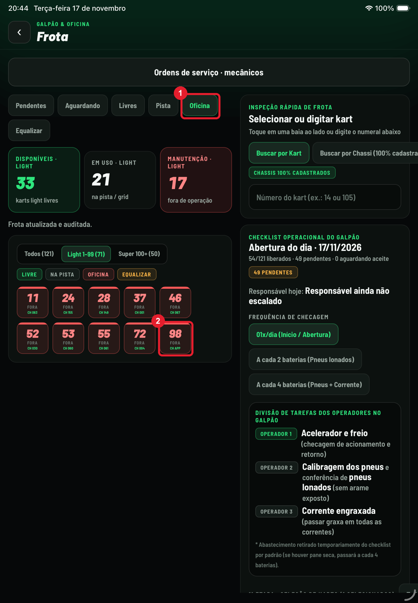
1 · Aba OficinaMostra os karts fora de operação (vermelhos).
2 · KartO kart aparece aqui e não entra no sorteio até ser liberado.
Contador“Manutenção” sobe 1 e aparece “Frota atualizada e auditada.”
E. Ordem de serviço (mecânico)
8Abrir Ordens de serviço · mecânicos
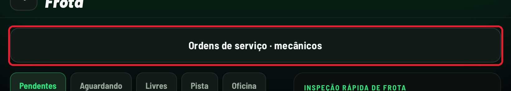
Na tela Frota, toque na faixa Ordens de serviço · mecânicos, logo abaixo do título.
9Escolher o kart, o defeito e o mecânico
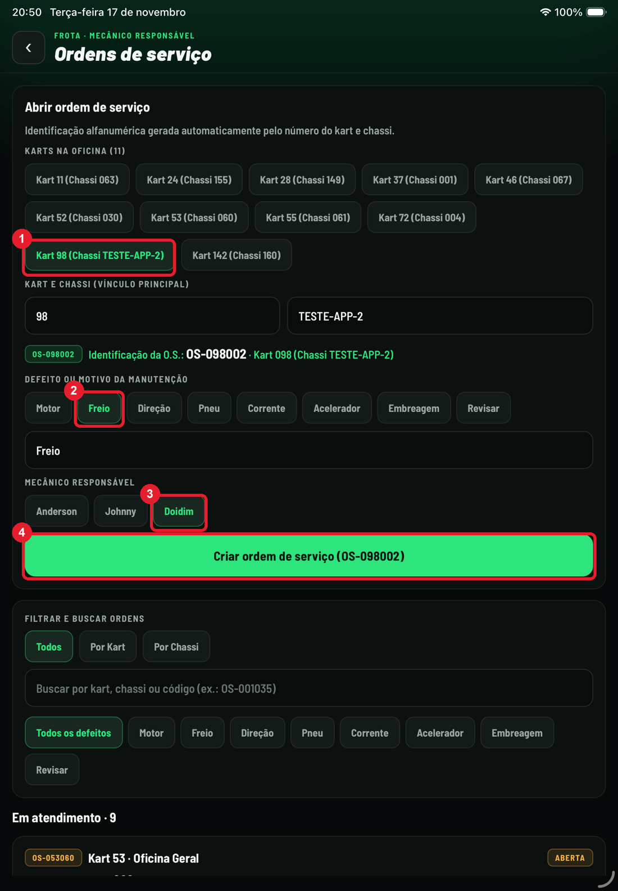
1 · KartToque no kart da lista Karts na oficina. Kart e chassi se preenchem sozinhos e aparece o código da O.S.
2 · DefeitoJá vem com o motivo; mude se precisar.
3 · MecânicoToque em Anderson, Johnny ou Doidim.
4 · CriarCriar ordem de serviço e depois Confirmar.
10Confirmar a criação
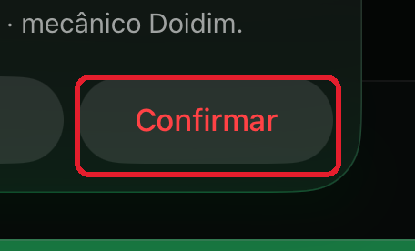
A janela mostra o resumo (código, kart, chassi, defeito e mecânico). Toque em Confirmar.
11Mecânico começa: Iniciar atendimento
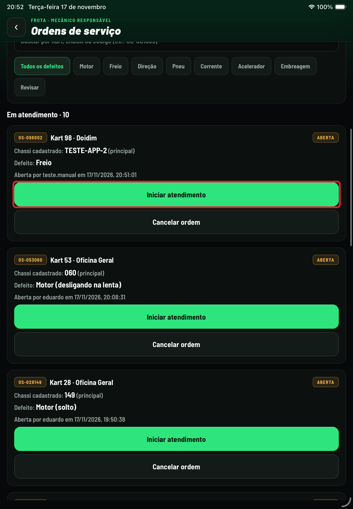
OndeLista Em atendimento, mais abaixo na mesma tela.
Onde tocarIniciar atendimento e Confirmar. O selo muda de ABERTA para EM EXECUÇÃO.
12Terminou: Concluir serviço
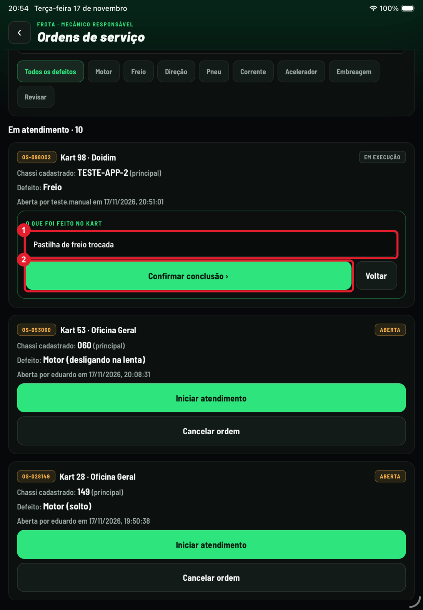
AntesToque em Concluir serviço · registrar o que foi feito ›.
1 · O que foi feitoEscreva o serviço (ex.: “Pastilha de freio trocada”).
2 · ConfirmarConfirmar conclusão › e Confirmar na janela.
AtençãoConcluir a O.S. não libera o kart: ele continua bloqueado até a parte F e G.
F. Concluir a oficina
13Na Frota, aba Oficina, abrir o kart e tocar em Concluir oficina
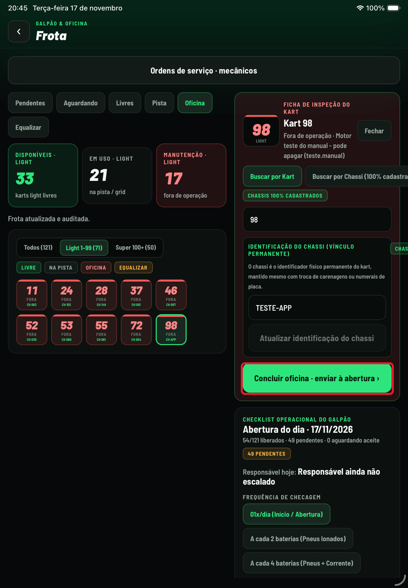
Onde tocarBotão verde Concluir oficina · enviar à abertura ›.
O que aconteceO kart sai da Oficina e vai para Pendentes, esperando a abertura do dia.
G. Abertura do dia: liberar o kart
14Checklist: selecionar o kart
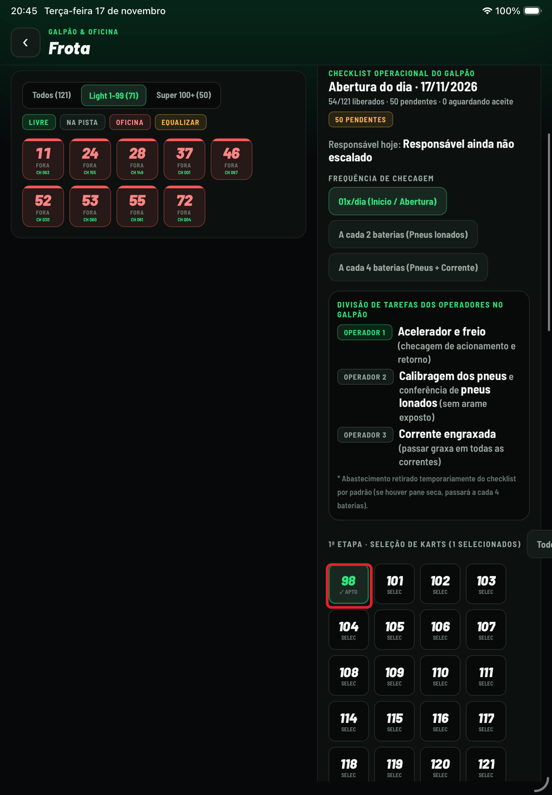
OndeNa tela Frota, role o painel da direita até Checklist operacional do galpão · Abertura do dia.
1ª etapaToque nos karts conferidos (ficam verdes com “✓ APTO”).
ItensAcelerador e freio, calibragem e pneus lonados, corrente engraxada.
15Tocar em Check list finalizado e confirmar
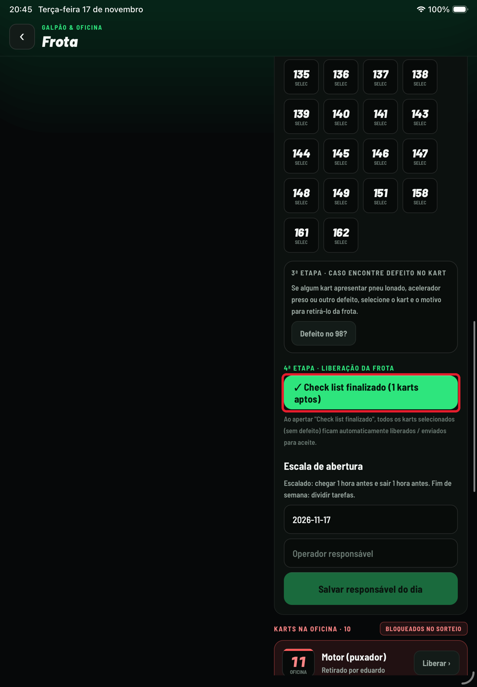
Onde tocar✓ Check list finalizado (N karts aptos) e depois Confirmar.
O que aconteceO kart vai para a aba Aguardando (aceite do responsável).
Defeito?Se achar defeito, use a 3ª etapa Defeito no X? em vez de finalizar.
16Responsável: Aceitar todos os conferidos
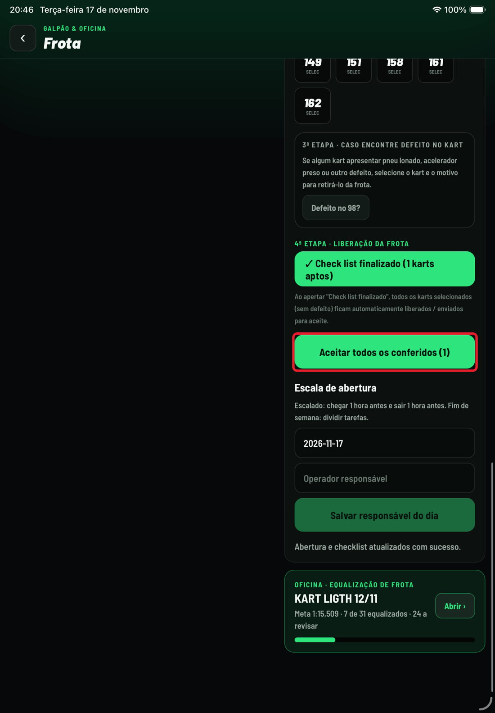
QuemGerência ou responsável do dia.
Onde tocarAceitar todos os conferidos (N) e Confirmar na janela “Aceitar abertura da frota”.
17Pronto: kart LIVRE para o sorteio
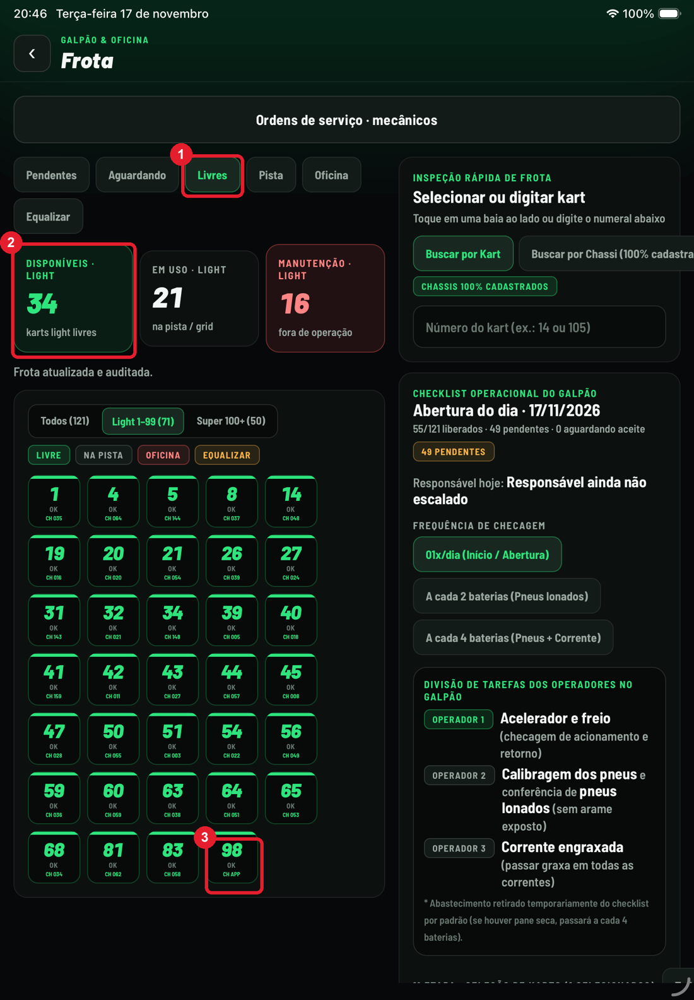
1 · Aba LivresO kart aparece verde.
2 · DisponíveisO contador da frota sobe 1 (no teste: 33 → 34 Light).
3 · KartJá entra no próximo sorteio da frota dele.
H. Problemas comuns
| O que acontece | O que fazer |
|---|
| Kart novo não aparece na Frota | Confira o cadastro no programa da cronometragem e se o selo Conectado está verde. Saia da tela Frota e entre de novo. |
| “Informe kart, defeito e mecânico responsável (Anderson, Johnny, Doidim)” | Escolha um dos três mecânicos. Outros nomes não são aceitos. |
| Lista de O.S. mostra “carregando…” | Espere alguns segundos. Se aparecer “Sem conexão com o servidor”, confira o Wi-Fi e tente de novo. |
| “Sem confirmação: pode ter sido aplicado” | Não repita. O app confere sozinho e avisa “Confirmado” ou “O comando não chegou ao servidor”. |
| “Nenhum kart Light/Super livre” no sorteio | Faça a abertura do dia (parte G). |
| Kart com O.S. concluída continua bloqueado | Falta concluir a oficina (parte F) e liberar na abertura (parte G). |
| Chassi errado na ficha | Troque na ficha do kart (parte C) ou no programa da cronometragem. |
Teste de 17/11/2026 no servidor de produção: card do kart 98 apareceu na hora após o cadastro na cronometragem; chassi trocado no app voltou para a cronometragem; tirar de operação, O.S. com Johnny e com Doidim (criar, iniciar, concluir), concluir oficina, checklist, aceite e kart LIVRE conferidos.